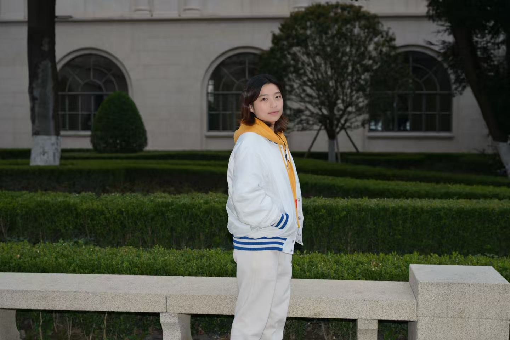
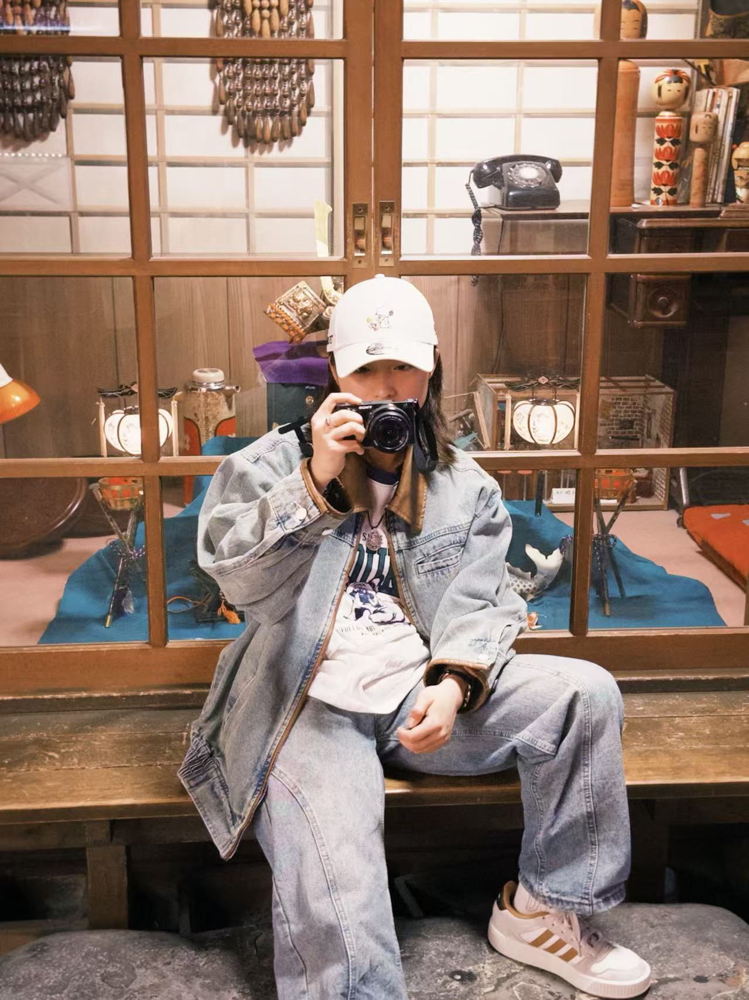

自然植物
植物不急着表达，却总在季节、湿度和光线里改变自己的样子。我拍它们，是为了记录这种缓慢但确定的生长秩序。
Why I Photograph
ENFJ
在中国与日本之间学习、生活与行走。
以植物、风景、人物和日常光线作为观看世界的入口。
我拍照，不是为了把世界变得更热闹，而是想在它消失之前，给某些安静的瞬间留下位置。跨城市与跨文化的生活经验，让我更容易注意到环境里细微的秩序：语言、季节、街道、植物和人的停顿。
Demon Atelier 对我来说更像一本持续装订的摄影画册：每一次拍摄都是其中一页，每一个项目都是一段可以反复回到的现场。
我更在意照片里有没有空气。那些没有被安排好的停顿、忽然转暗的天色、人物在镜头前短暂松弛下来的瞬间，往往比漂亮本身更接近记忆。联系拍摄

Creative Notes
植物不急着表达，却总在季节、湿度和光线里改变自己的样子。我拍它们，是为了记录这种缓慢但确定的生长秩序。
山谷、海岸和城市边缘让我相信，空间本身也有呼吸。镜头在这里不需要用力，只需要足够安静。
旅行不是抵达某个地方，而是一路上被光线、天气和陌生街道改变的过程。我把这些片段收进照片里。
Story Making

很多照片并不是在按下快门时开始的，而是在我决定停下来的一刻开始。坐下、抬起相机、重新看一遍面前的光线，周围原本普通的陈列、木色和玻璃反光，都会慢慢变成可以被记录的现场。
我希望每一组照片都不只是好看的画面，而是能让人想起当时的空气、声音和心情。照片负责保留现场，文字负责把那一刻轻轻翻开。